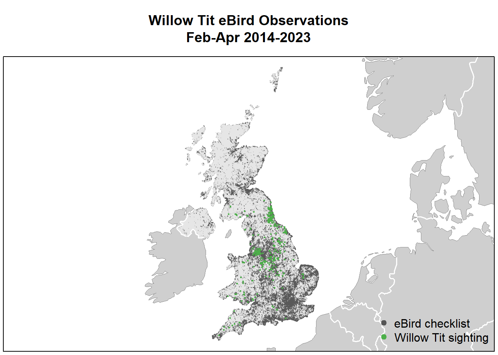
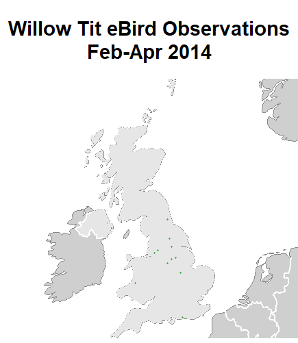
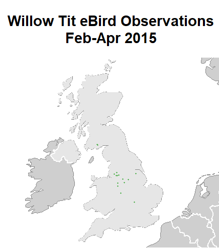
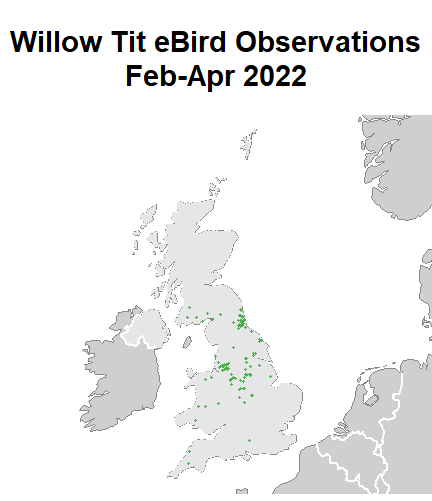
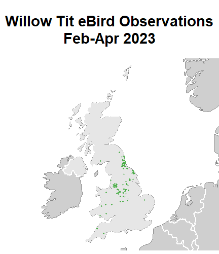
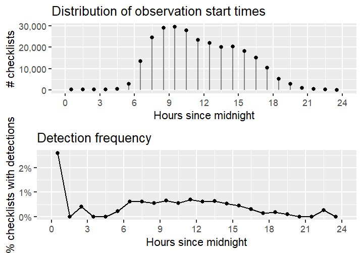
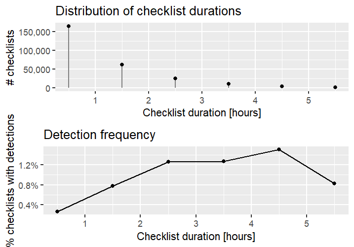
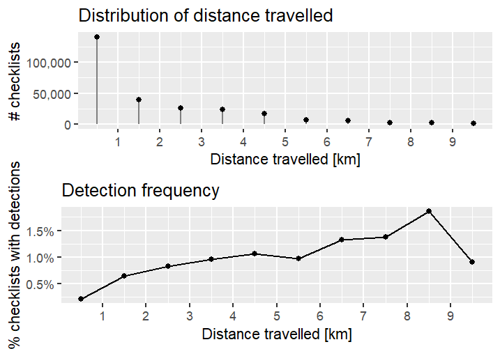
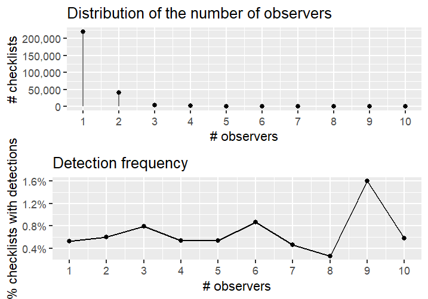

4 Exploratory Analysis
A preliminary look at the data may be helpful in gleaning a few insights. Here, some exploratory visualisations are presented covering the observations and checklists alongside some discussion.
4.1 Willow Tit Observations
A map of the observations was made using GIS data (see the file GISdata.R for the code). Each point on the map corresponds to the latitude and longitude point for a checklist or observation. Checklists with no observations are plotted in grey while checklists with observations of Willow Tits are in green.
From this map, it is clear that there is a spacial bias of checklists across the UK, e.g. a greater number of checklists are recorded around areas such as London while other areas have no checklists.
It does show that Willow Tit sightings from the last ten years (2014-2023) are clustered predominately in northern England across the counties of Durham, North Yorkshire, Manchester, and Derbyshire. Sightings across south Wales are also evident. The picture corresponds with the data released from the study organised by the RSPB, and this map gives a more detailed picture of where additional sightings have been recorded across the time period.
However, there are still gaps where no observations exist. This study aims to fill these by using relationships between species occurrence and environmental variables to predict the distribution of Willow Tits in areas that are not sampled. But before any predicitions are made, it would be useful to explore the data a bit further.
Maps were then created for each year to see if anything could be learned from these. Only the first two years (2014 and 2015) and last two years (2022 and 2023) are given:




Looking at the two first and two last years of the time period, it appears that Willow Tit sightings have increased. However, this is not due to an increased population.
One possibility for the increase in sightings might be a taxonomic bias, that is, the preferential recording of a species. It could be the case that observers are actively looking for Willow Tits due to preference for the species or an increased awareness of their decline. Having restricted the data to only complete checklists has helped to mitigate this bias.
Another possibility for increased sightings could be due to eBird growing in popularity with birders. The combination of a user-friendly design and the ability to find locations and identify birds anywhere in the world has made eBird one of the foremost resources for birders. Alongside this, the development of apps such as Merlin, and the ability to easily make lists, has encouraged many new people to get involved. An increase in the number of observers and records would naturally increase sightings of rare and beloved species.
4.2 Distribution of checklists
4.2.1 Time of day
The data were explored to see if there was a time of day where observers were more likely to detect Willow Tits. The detection frequency was also plotted alongside following (Strimas-Mackey 2023). The recommendation to plot only hours for which at least 100 checklists were present was followed since estimates of detection frequency are unreliable when only a small number of checklists are available.

The first graph shows that the greatest number of checklists were started in the morning and the number drops off towards the end of the day, though there are still a large number of checklists throughout the day.
Looking at frequency of detection, it appears that Willow Tit detections begin in the early morning and are steady until the afternoon when they fall off. This is consistent with the behaviour of many small birds in the UK that are typically more active in the morning.
However, it is important to note that the highest detection frequency is only around 0.6% or 0.7%. Considering the dataset is of an optimal sample size i.e. number of checklists (269,775) , this low detection seems likely and aligns with the declining status of Willow Tits.
It may also be concluded that the time of day does not play a significant role in Willow Tit detection. Having limited checklists to the period when Willow Tits are most vocal, and therefore more likely to be detected (February - April), will be more useful in further predictions than the hour of the day.
4.2.2 Checklist duration
The data were plotted to show the duration of the checklists; remember that checklists over 6 hours were removed to reduce variability.

From the first graph, it is clear that the greatest number of checklists are less than an hour. Looking at the detection frequency shows that the longer the birding event, the more likely a Willow Tit observation will occur. This is consistent with what one might expect. However, like the time of day, the frequency of observations is still small (no higher than 1.5%). There also seems to be a saturation effect where birding events over a given length produce little additional benefit.
As with the time of day, duration may not play a significant role in detection of Willow Tits for predictive analysis.
4.2.3 Distance travelled
The data were plotted to explore the distance travelled; remember that checklists over 10km were removed.

The majority of checklists were under 1km which means that these checklists will be contained within a small area. Therefore, habitat will not be as varied, and this will enable better predictions based on landcover.
As would be expected, detection frequency is higher for checklists with longer distances i.e. the greater the distance travelled, the more likely a Willow Tit will be seen. But again, detection frequency is still small, no greater than 2%.
Distance, therefore, is of importance for further analysis in that the majority of checklists cover smaller areas and can more reliably stand for the environmental variables they represent.
4.2.4 Number of observers
Finally, the number of observers were plotted having already removed checklists with more than 10 individuals.

The majority of checklists were completed by one individual, with a considerable number having two. It does appear that detection frequency increases with more observers, but there is no real pattern to support this conclusion. This is likely due to so few checklists having three or more observers.
Number of observers will not be useful in further predictions.